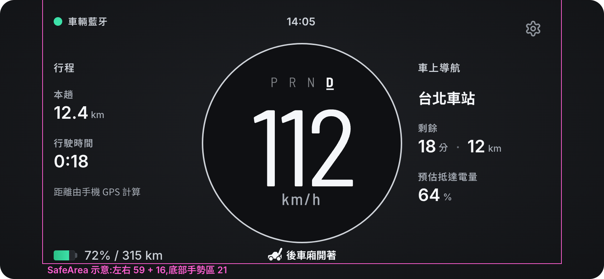
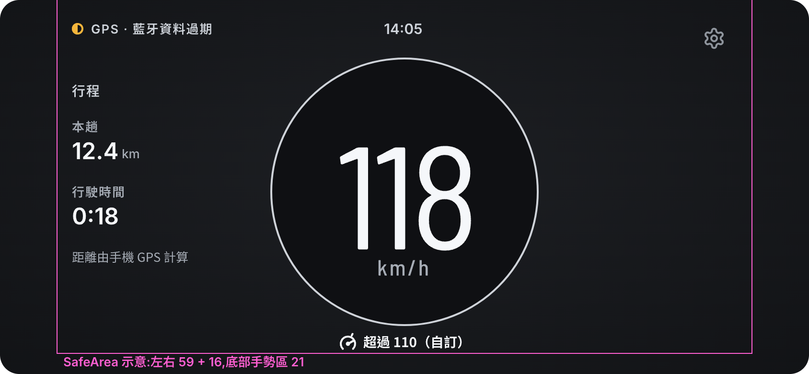
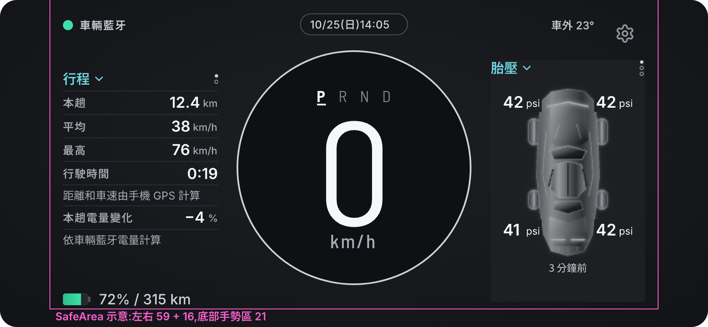

主畫面 A「雙翼」・調整 2(HTML 主稿)
調整 2 改了什麼(對 A 原稿)
- 量表:360° 一整圈淡灰細圓環(2 px,#CFD3D9),裡面一塊深色圓盤(#0F1013);拿掉走過的亮弧和紅刻。老闆指定保留、沒調暗。
P R N D字距拉開:每格 18 → 26 px。字級、粗細、底線、位置(數字正上方)不變。- 行駛兩側:改成「小標題在上、大數字在下」,東西變少、字變大(數值 18 → 24 px);左右兩塊從同一高度開始。行程的小字改成「距離由手機 GPS 計算」;導航的「18 分・12 km」上面加標題「剩餘」。
- 狀態列:環上的 4 格拿掉,改成圓環正下方一行「圖示 + 字」,例如「[圖示] 後車廂開著」;未知的那格只畫虛線圖示。② 拿掉 110 的小刻痕(圓環沒有刻度了)。
- 停車胎壓:車圖下面多一行讀值時間「3 分鐘前」。
- Pen 匯入跑掉的地方(字型換成 Inter、單位變大被切、未知車門變實心):HTML 本來就沒有這些問題,這版不用修。
修正 1(2026-10-26):設計審查的 5 點(L77、L78)
老闆說這 5 點由 tsla-speed-meter-80 改;夜間老闆選「外圈變暗」。Pen 沒有跟著改,這頁是最新的。之後又做了一次「精簡」(下一段)。
- 狀態列放得下:圖示照固定順序(前車廂、後車廂、車門、門檻)排前面,縮成 18;後面接一句話,上緣 y 350 不進量表區。放不下 300 寬時依序退:15 → 13 px → 「N 處開著」、未知只留虛線圖示 → 只留門檻那句。⑤ 是最擠的情況。
- 不會把預估電量看成即時電量:「預估抵達電量 64%」改成一句「抵達時約剩 64%」(15 px),比左下的即時電量(17 px)小;兩側數值 24 → 22 px、改用 text.secondary,白色只留給車速。行駛時間和小字保留(老闆喜歡 Dashla 的寫法)。
- 夜間圓環變暗:夜間用 text.dim #6B7078,比夜間車速暗(⑥)。白天照舊 #CFD3D9。
- 車門未知有字:狀態列多「車門未知」(text.secondary),不再只有虛線(④)。
- 超過門檻更明顯:圓環 2 → 5 px,不變色、不閃(② ⑤),取代 110 刻痕。
圖示化(2026-10-26,L81)
老闆:「可以用精美 icon 表示的通知就不需要中文解釋了」,畫面要更整齊乾淨。
- 車況只用圖示:前車廂、後車廂、車門、超過自訂門檻,拿掉「後車廂開著」「車門未知」「超過 110（自訂）」這些字。圖示照車上儀表的慣例(車廂側面、車門俯視),24 × 24,搬到右下角和左下電量同一行;圓環下面空出來。
- 來源只用圖示:綠色藍牙 = 車輛藍牙;琥珀色定位箭頭 + 灰色藍牙斷線 = GPS · 藍牙資料過期。
- 停車上方:「車外 23°」改成溫度計圖示 + 23°;日期時間拿掉外框,和行駛時一樣。
- 字都還在讀屏的 aria-label 裡;資料標籤(本趟、行駛時間、剩餘)不是通知,照舊。
精簡(2026-10-26,L80)
- 行駛時兩側拿掉標題「行程」「車上導航」:內容自己看得懂(本趟、行駛時間;目的地、剩餘),讀屏改用 aria-label。停車畫面的標題是按鈕,照舊。
- 行駛時拿掉小字「距離由手機 GPS 計算」:開車時只看一眼,不讀說明;資料來源留在停車畫面的行程那組。
- 兩側內容上下置中,對著量表中心,離車速數字比較近,不再黏在上方。
- 目的地也改成 text.secondary:兩側全部同一個灰白,白色只給車速。
四張畫面(左:HTML 主稿;右:Pen 匯出,只拿來對照)



修正 1 新增的兩張(Pen 沒有)
和 Pen 匯出不一樣的地方、要裁定的事
檔案清單
docs/design/frames/main-redesign-a2.html:這一頁(?screen=<ID>單張)。docs/design/frames/main-redesign/a2/:(844 × 390,2 倍)。docs/design/frames/main-redesign/pen-adj/:Pen 匯出的調整 1(A1-*.png)和調整 2(A2-*.png),從另一個 session 的暫存資料夾存過來,只當對照。- 沒改:
main-redesign.html(A 原稿、B、C)、frames/main-redesign/原有的 PNG、.pen。
自查(頁面打開時自動跑)
- 自查還沒跑完(要等字型載入)。